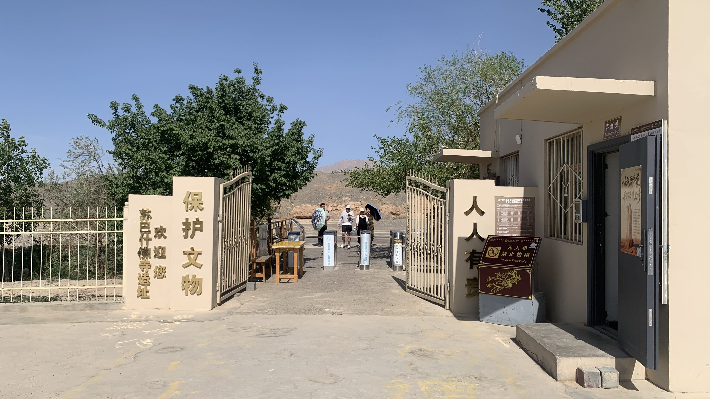
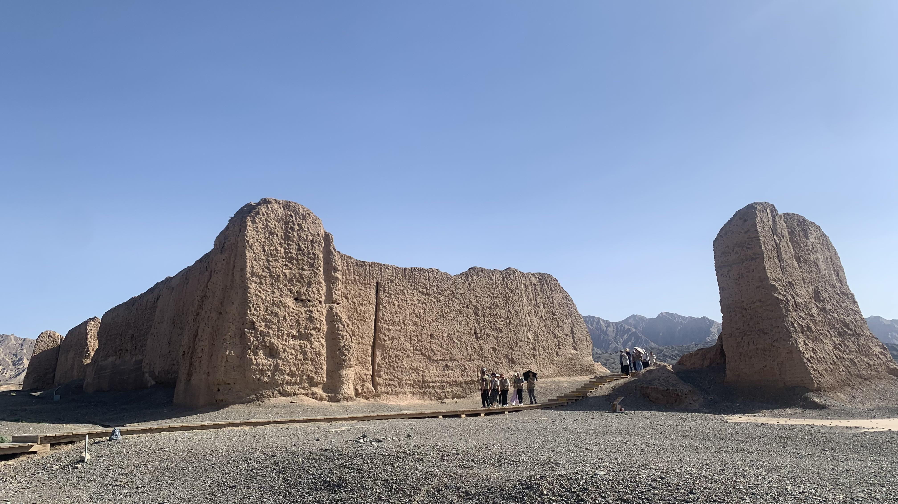
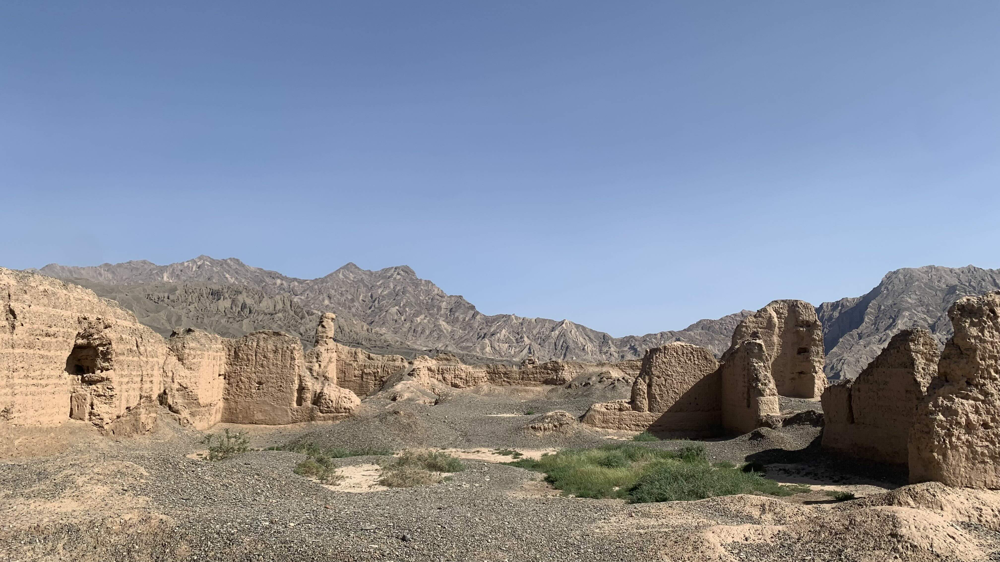
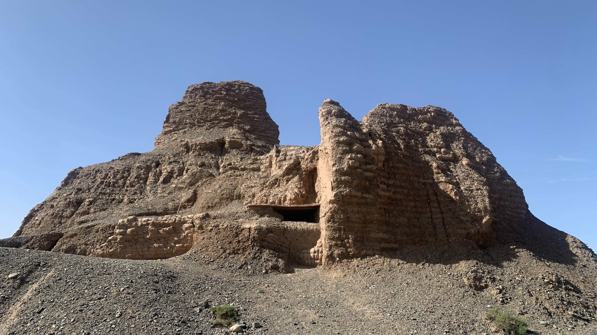
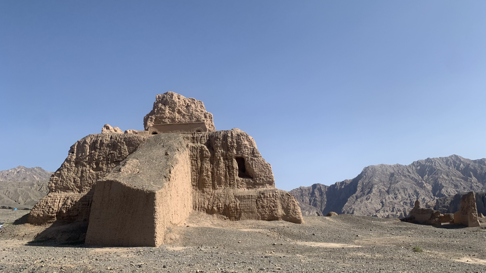
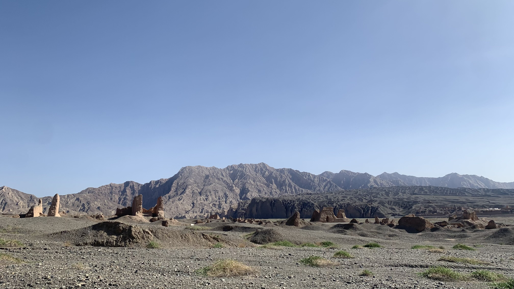
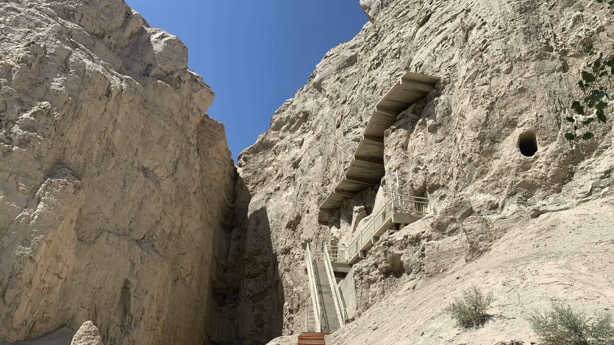
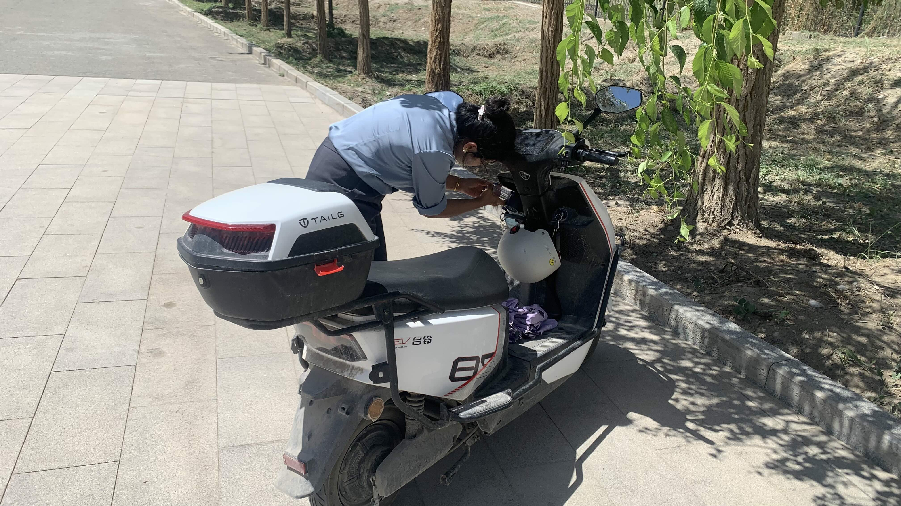
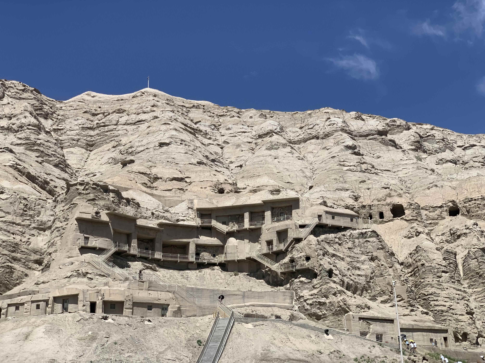

k-Day 157｜蛤天人的故事
由於前兩天讀了大唐西域記，實在很想去見見玄奘住了兩個月的昭怙釐大寺。決定多住一天，包了輛車早上參觀佛寺，下午到克孜爾千佛洞。

昭怙釐大寺又名蘇巴什佛寺，玄奘和鳩摩羅什都曾在此講經。遺址沿河兩岸興建，東寺遺跡沒辦法參觀，西寺門票是25元一個人。

在景區內不能離開鋪設的木棧道，跟著規劃的路線走，第一站是西寺大殿。
大殿由三面牆圍繞，沿河的一岸沒有興建圍牆，四個角有高塔，不確定是什麼用處。

走進圍牆後幾乎看不出原本的空間配置，只有木棧道上設置的說明牌寫著鳩摩羅什與玄奘講經處。

這是西寺中部佛塔的遺跡，導覽員說這型制同時受到鍵陀羅的影響，又融合了龜茲本地特色。我是完全看不出來的。

這裡似乎是僧人的住所，不太確定，雖然聽了導覽也沒能記住。

從從散落的遺址看來西寺原本的規模應該相當巨大，加上河對岸的東寺幾乎堪比現代鄉鎮的規模。可惜現場沒有導覽手冊，只能中途跟在團體導覽旁邊，透過風吹進耳朵裡的片段訊息了解歷史。
途中倒是記下一句話：「玄奘到了龜茲再往西走有三條路線，分別對應現在的國道312、314、315。去程走的是中線，回程走的是北線。」昨晚自己看故事，推測大唐西域記走到姑墨之後應該是直接從別迭里口岸方向往吉爾吉斯走，如果是314的話也就說得通了。
在寺廟遺址沒有停留太久，一小時後就坐上車往千佛洞方向移動。
在完全沒有研究的背景下，根據售票口大姐的推薦，選擇了第80窟的特別導覽。
普通窟的票價是70元，10人開團，總共可以看6個窟。特窟費200元，導覽費100元，是一對一的專門講解。

我選擇的80窟叫作「地獄油鍋窟」，根據當時發現這個洞窟的德國人看到裡面畫的油鍋圖案命名。千佛洞裡許多珍貴文物和壁畫現在都得到柏林的亞洲藝術博物館才能看到，現場會發現許多被挖下來的方格，徒留灰色石璧。
洞窟內是不能拍照的。根據自己的記憶，面對洞口的牆面畫了釋迦摩尼，他的頭上有七佛，下面有油鍋。左右兩邊分別是願意聽法的人和不願聽佛法的人，以面部表情和動作區分（這部分我自己是看不出來的）。面對洞口的牆面有壁龕狀的凹陷，推測本來是有釋迦摩尼的塑像，並沒有保存下來，只剩上方與左右兩側的壁畫。
靠近洞口的右邊牆上鑿出一個洞穴，沿著通道往裡面走會進入僧人打坐的圓室，圓室的左邊在膝蓋高度的位置鑿出足以容納一名瘦子坐在裡面的凹槽，僧人打坐就坐在裡面，絕對稱不上舒適；圓室右邊，也就是正對打坐處的牆上也有個小洞，據說是可以進出的。
回到正室，導覽員用菱形花紋的手電筒指著拱型牆面上的菱格說，這些藍綠相間的菱格，每一格都是一個故事。跟敦煌石窟用線性動態講述故事不同，為了在一個空間裡盡可能容納更多的佛經典故，格子裡會擷取每個故事中的關鍵意向，用最簡單的圖案讓不識字的人可以透過圖案了解佛法。
菱格故事畫可以分成佛祖作為人類時的故事，以及因果報應的警世故事兩類。
導遊指著最下排靠左的菱格說：「這畫的是佛祖正在樹下說法，他的腳邊有個藍色的蛤蟆，這支蛤蟆在上輩子是個能言善道的人，因為他曾經嘲笑別人說：『你看你連話都說不好，還留著口水，像個蛤蟆似的。』這一世就轉生成一隻蛤蟆。蛤蟆在佛祖腳邊聽佛法，突然來了一位養牛人，養牛人也走過來想聽佛法，沒想到他手上的棍子卻把蛤蟆砸死了。佛祖想，這隻蛤蟆雖然前世喜歡嘲笑別人，但他也是因為聽我說法而死，就決定讓這隻蛤蟆到天上成為天人。」
「這也太可愛了吧。」我腦中浮現一隻蛤蜊軟軟的身體爬出水面，待在佛祖腳邊聽佛法的畫面。
導覽員眼神有點疑惑，似乎不明白這故事為何讓我這麼開心。他沿著洞穴後方走，並一邊解釋：中間的佛祖塑像雖然沒有保存下來，但是他的左右兩邊可以相通，從右邊的開口往後走，再從左邊出來，繞一圈就是一次禮佛。後方洞穴雖然狹窄，牆面上還畫了巨大的臥佛圖。臥佛圖的腳邊有四名拿著樂器的飛天，飛天的意象似乎就是這裡來的。
特窟的講解應該是20分鐘，因為我自願接受臨時報名的遊客和我一起，因此我們兩可以聽四十分鐘的故事。
和我一起參觀的女士對於佛教石窟相當了解，問了導覽員幾個問題，導覽員說這裡的洞窟所畫的人像包含了佛教剛傳到此處的形象，逐漸轉變成龜茲本地人的長相。至於選用的顏色，藍色青金石是珍貴的顏料，即便是同一個洞窟內使用的顏料比例也不同，比如菱格畫裡的藍色有些褪色，但是原本有佛祖塑像的中間壁龕上像是土耳其藍眼睛填滿拱型壁面至今仍相當鮮豔明亮。有些看來像紅色的地方，原本是黑色的。
導覽相當精彩，不過人力上似乎相當吃緊，解說過程中不斷有電話詢問導覽老師的後續行程。

這是導覽老師，剛剛從排隊處坐著他的機車過來的，相當感謝他精彩的解說。

回到普通窟排隊處，本來必須湊齊十個人一組才能上去，工作人員看我回來，拿了參觀小票讓我自己上去。
普通窟內的壁畫和雕塑幾乎被破壞了八九成，應該是根據剩下的兩成挑出具特色的七個窟供民眾體驗。
拿著小票走進第一個洞窟，裡面已經擠滿人潮，導覽員的講解剛好告一個段落，正引導觀眾們往外走。
沒想到站在最靠近壁龕的一名維族中年男子突然發難，對著體型只有他一半的導覽員吼道：「這後面能不能進去？」看了他手指的位置，是剛剛在特窟裡，導覽員帶我們繞了一圈的壁龕後方的空間。普通窟是用紅龍圍起來的，顯然不允許進入。
被中年男子突然大吼的解說員顯然嚇到，結結巴巴地解釋：「待會有一個洞窟是可以給大家體驗的，這裡不能進去。」
穿著土黃黑色大花襯衫，領口開到啤酒肚上緣，脖頸繃著一條綠色石頭項鍊，長相神似大師兄的男子加大音量：「能不能進去！」「能不能進去！」這似乎是他僅有的語言能力中唯一能組織出來的一句話。
擠滿人潮的洞窟中沒有其他人開口，也沒人離開。我拿出手機，刻意舉高手讓大家意識到有人在拍攝，並對著這名花襯衫中年人按下錄影鍵。
大師兄的老婆見狀，立刻走到他旁邊低聲說了什麼。大師兄朝我的方向瞪了一眼，旋即拋下為難解說員這項重要志業走到我面前，對著我的臉噴：「你為什麼拍我？」
「因為你剛剛的行為很沒禮貌，我不知道待會會發生什麼事，但是很可能需要報警，為了協助蒐證，所以我拿手機拍下來。」
此話一出，旁邊幾名原本也想往管制區靠近的中年男子也被引爆。
「你自己才是違法的！」「你憑什麼拍人？」
「你需要我報警嗎？」
報警兩個字剛說完，大師兄、他的兩名青少年兒子、體積和他不相上下，穿著桃紅薄紗長袍的老婆立刻圍住我，要我交出手機把影片刪掉。
導覽員跑出洞口找了兩名警衛進來。
一陣混亂之中，大師兄的二子表示只要我刪影片他們就會離開。
剛剛等在一邊趁亂噴屎的中年男子見狀，想趁亂從人群中溜走。
「你不要走啊！」我出聲制止。
另一名剛剛也在圍觀的中年男子躲在人群後說：「關他什麼事？跟他有什麼關係？」
「跟他沒關係？」我看著他說。
中年男子撇過頭，朝著地面低聲抱怨了一句：「本來就沒關係。」
眾人散去，石窟門邊還坐著一名女子，他看著我問：「你是哪裡人？」
「台灣。」我說。
「我聽出來了。你說話有台灣人願意替自己維權的感覺，而且也不會爆粗口，就是堅定表達訴求。」
這還是第一次被這麼稱讚。「你知道侯佩岑嗎？剛剛我聽你說話就類似那樣的感覺。」
......蛤？
解說員向警衛解釋狀況後回到洞穴，跟我說：「我們加個微信吧！我把門票退給你，好人要有好報。」
我就是那隻在釋迦摩尼腳邊聽佛法的蛤蜊，差點以為自己會被養牛人一棍砸死。
今天的故事告訴我們，好人有好報。
今日花費：計程車費 300、蘇巴什佛寺遺址門票 25、克孜爾千佛洞門票 70、特窟門票＋導覽 300、晚餐 51.4、住宿 51元
今日收入：千佛洞講解員提供 100元